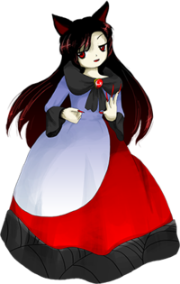

- Welcome to Touhou Wiki!
- Please register to edit. For assistance, check in with our Discord server or IRC channel.
Kagerou Imaizumi
Kagerou Imaizumi imaizɯmʲi kageɽoː | |
|---|---|
|
Kagerou in Double Dealing Character The Bamboo Forest's Loup-GarouMore Character Titles | |
| Species |
Werewolf |
| Abilities |
Can transform into a wolf on the night of the full moon |
| Location | |
Music Themes | |
| |
Appearances | |
| Official Games | |
| |
| Print Works | |
| |
Kagerou Imaizumi (今泉 影狼 Imaizumi Kagerou) is a werewolf who lives in the Bamboo Forest of the Lost.
General Information[edit]
Kagerou is said to have a calmer demeanor than one would expect from a werewolf. Like Keine Kamishirasawa and her were-hakutaku transformation, Kagerou acquires some characteristics of a wolf during a full moon, but she also has the ability to turn into an actual wolf (as demonstrated during her spell cards). To be exact, she is a were-Honshu wolf. Honshu wolf is a species of wolf that has gone extinct in the outside world.
Character Design[edit]
Name[edit]
Her first name Kagerou (影狼) literally means "Shadow Wolf". It is also homophonous to the word Kagerou (陽炎), which means the shimmering of hot air, which refers to Honshu wolf's state of extinction. Her surname, Imaizumi (今泉) is a reference to the Japanese zoologist Yoshinori Imaizumi (今泉吉典), who first researched Honshu wolf. It's spelled with the characters for "now" and "spring".
Design[edit]
Kagerou has dark auburn hair and red eyes. She has two wolf ears. She wears a dress which is based on the design of the Hanafuda card for Pampas Grass and the Full Moon. The red on the dress represents the red sky, the white represents the moon, and the black trim with a hash pattern at the bottom represents the hill of pampas grass. At the neck of her dress is a red amulet. She has long, red nails. There also appears to be black fur poking out from under her sleeves. As shown in Wild and Horned Hermit, she seems to keep the same appearance, including her animal ears, even without the full moon.[1]
Story[edit]
- Double Dealing Character
When the Miracle Mallet's power floods into Gensokyo, Kagerou becomes aggressive and attacks the heroine as they fly through the Bamboo Forest of the Lost. After the incident is resolved, she calms back down.
- Impossible Spell Card
Presumably from hearing or seeing a wanted sign about the mischief-making amanojaku Seija Kijin, Kagerou appears to be one of the many youkai that tries to capture her. She uses spell cards that are considered impossible to dodge, and forces Seija to make use of different tools.
Relationships[edit]
Wakasagihime[edit]
Kagerou knows Wakasagihime thanks to the grassroots youkai network, where she seems to know Wakasagihime's general personality. Kagerou stated that she once tried to eat Wakasagihime by mistake.[2]
Spell Cards[edit]
| Name | Translated | Comments | Games | Stage | ||
|---|---|---|---|---|---|---|
| Total: 9 | ||||||
| 牙符「月下の犬歯」 | Fang Sign "Moonlit Canine Teeth" | DDC | St. 3: H/L | |||
| 変身「トライアングルファング」 | Transformation "Triangle Fang" | DDC | St. 3: E/N | |||
| 変身「スターファング」 | Transformation "Star Fang" | DDC | St. 3: H/L | |||
| 咆哮「ストレンジロア」 | Roar "Strange Roar" | DDC | St. 3: E/N | |||
| 咆哮「満月の遠吠え」 | Roar "Full Moon Howling" | DDC | St. 3: H/L | |||
| 狼符「スターリングパウンス」 | Wolf Sign "Star Ring Pounce" | DDC | St. 3: E/N | |||
| 天狼「ハイスピードパウンス」 | Sirius "High-Speed Pounce" | DDC | St. 3: H/L | |||
| 満月「フルムーンロア」 | Full Moon "Full Moon Roar" | ISC | St. 3 | |||
| 狼牙「血に餓えたウルフファング」 | Wolf Fang "Bloodthirsty Wolf Fang" | ISC | St. 3 | |||
Additional Information[edit]
- She's the first werewolf in a remotely traditional sense to appear in the series.
- And interestingly enough she has a serious dislike of how hairy she'd get on a full moon, making her normally far less aggressive than most werewolves.
Fandom[edit]
Official Profiles[edit]
|  | ○３面ボス 竹林のルーガルー 今泉 影狼（いまいずみ かげろう） 種族：狼女 落ち着いた性格の持ち主。 迷いの竹林には月の住人が屋敷を構えている為か、 ちなみに、外の世界では絶滅したニホンオオカミ女である。 満月の日は毛深くなるのが気になるようで それが、何故か今回は暴れていたのが霊夢の耳に届き、 |
Stage 3 Boss - The Bamboo Forest's Loup-Garou Kagerou Imaizumi Species: Wolf-woman A person with a calm personality. It seems that there are many youkai related to the moon in the Bamboo Forest of the Lost, By the way, she is a were-Honshu wolf, a species extinct in the outside world. She lives quietly, hiding her skin as if concerned This time, she began to go berserk for some reason; this reached Reimu's ears, |
Official Sources[edit]
- 2013/05/26 Double Dealing Character trial - omake.txt (trial profile, stage 3 dialogue)
- 2013/08/12 Double Dealing Character - omake.txt (official profile, stage 3 dialogue)
References[edit]
- ↑ Wild and Horned Hermit - Chapter 20
- ↑ Double Dealing Character: Marisa B's Scenario
| This page is part of Project Characters, a Touhou Wiki project that aims to write proper descriptions for all official characters of Touhou Project. Please keep the character page guidelines in mind when contributing. |